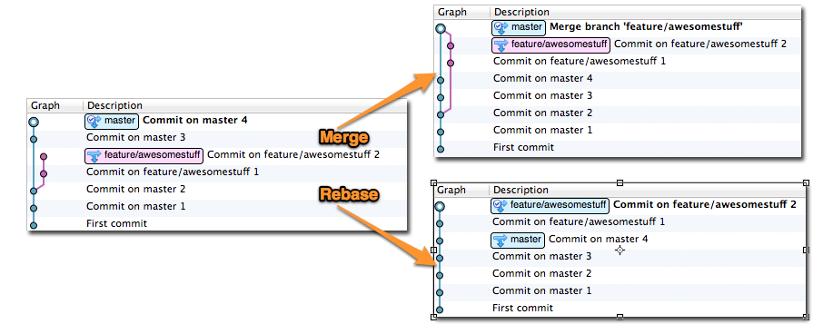

Quick Command
git init
git config --system core.autocrlf false
git add .
git commit -m 'first commit'
git remote add origin git@github.com:jack/jack.github.io.git
git push [-f] origin master
Remove all git commits and records
git checkout --orphan newBranch
git add -A # Add all files and commit them
git commit
git branch -D master # Deletes the master branch
git branch -m master # Rename the current branch to master
git push -f origin master # Force push master branch to github
git prune --progress
git gc --aggressive --prune=all
my git cmd
hugo build --gc --noBuildLock
git init
git config --system core.autocrlf false
git checkout --orphan newBranch
git add -A
git commit -m 'update'
git branch -D master
git branch -m master
git push -f origin master
git prune --progress
git gc --aggressive --prune=all
Truncate git history
#!/bin/bash
git checkout --orphan temp $1
git commit -m "Truncated history"
git rebase --onto temp $1 master
git branch -D temp
git prune --progress
git gc --aggressive --prune=all
git repack -a -f -F -d
Here $1 is sha-1 of the commit you want to keep and the script will create new branch that contains all commits between $1 and master and all the older history is dropped.Save this to 1.sh, use it like ./1.sh + commit sha-1.
SSH Key Authentication
In Git Bash’s command window, enter this: :
Copy all of the content in the file C:\Users\{username}\.ssh\id_rsa.pub to Server.
Then type this into Git Bash: :
$ eval `ssh-agent -s`
$ ssh-add ~/.ssh/id_rsa
To test that everything works, enter this into Git Bash: :
Git Server
apt-get install git git-core
useradd git
cd /srv
git init --bare mygitbase.git
chown -R git:git mygitbase.git
Modify /etc/passwd ==> git:/bin/bash –> git:/usr/bin/git-shell,
Then import rsa.pub to /home/git/.ssh/authorized_keys,
It is done!
Git rebase vs merge
